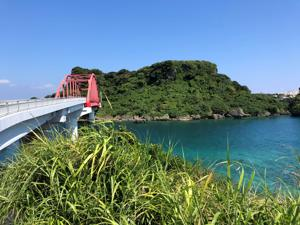
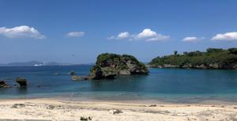
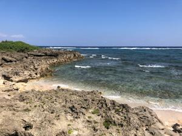
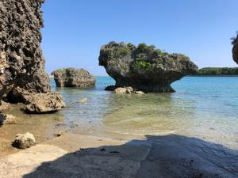
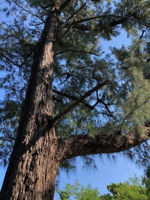

うるがいの話 ある日
最新: 編曲うるがいとは 前提知識です
カニの画像をクリックすると『うるがいの話』サイトを表示します|
|
【うるがいの話】 うるがい(ｳﾙｶﾞｲ urugai)とは、『もずくがに』の名前でとても大きくなります。 |
|---|---|
|
|
【Got cat カミマヤーの話】 たながー（ﾀﾅｶﾞｰtanagaa）とは手長えびのことで、何種類かあり大きいのは車 エビぐらいになります。 |

|
【ぶながぁの話】 ぶながー(bunagaa)とは、赤い髪の毛、赤い身体、そして身長は１ｍ２０ｃｍ ぐらい、川の蟹を食べているの目撃された。場所は沖縄県国頭郡大宜味村のと ある村僕の隣近所に住んでいる爺さんから、聞いた話です。 |
|
|
【ギーマの話】 ギーマ(giima)とは、山原の里山に咲くスズランに似た、 花を付けます。実は食べられます、 気が付くと口の周りが紫になっています。 |
2021年11月13日 (土）編曲
15:20
    
朝ドラ『カムカムエヴリバディ』を見ていると、ルイアームストロングの歌が
流れる。ん！、そういえば『この素晴らしき世界』を楽譜ソフトに登録しギタ
ーのコードを調べ、合奏するんだったけ。と朝から楽譜を見る、メロディーを
登録するのはまだしも、ギターのコードを調べるのが大変！。ネットを調べま
くる、楽譜をかなり見る。一緒じゃない、メロディーは４分の３拍子なのにネ
ットには４分の４拍子が多い、中には８分の１２拍子なるものも・・・。三線
に少し飽きたので、たまにはいいかも。しかし、元は一つの曲なのに編曲しま
くっている、また、これがいいメロディーなのだから仕方ない。泥沼に入って
いきそうな気配もする。いま気温は２１度である、ＮＡＨＡマラソンもこれぐ
らいだったら最高だが、コドモが来週オンラインで走る予定である。